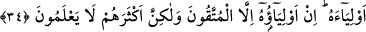

oldukça” demek olduğu da söylenmiştir.
Müminlerin emirî Hz. Ali (r.a.) şöyle demiştir: “Yeryüzünde iki eman vardı. Biri gitti,
diğeri kaldı. Giden Rasûlullah (s.a.v.), kalan ise istiğfardır.” Sonra da bu âyeti okudu.
Nefâisü’l-mecâlis adlı eserde denilmiştir ki: “Allah, îmanında sâdık olan mümine
âhirette azâb etmez. Çünkü kıyamet günü Peygamber’i onların arasında olacaktır. Allah
Teâlâ Peygamber (a.s.) aralarında olduğu sürece onun ümmetine azab etmeyeceğine
yemin etmiştir.”
Tevbede sadâkat, kurtuluşa götürür. Tevbe ise sadece dil ile değil günahtan
vazgeçerek pişmanlık duymaktır. Avamın istiğfarı günahlardan, havâssın istiğfârı
Allah’ın lütfunu değil yaptığı amelleri görmekten, mânevî büyüklerin istiğfârı ise
Allah’tan başka bir şey görmektendir.
Hak dedi: Bağışlanmayı benden dile
O dilek bağışlanmaya sebep olur
Günah zehirinin ardından, eğer işitebilirsen
Keskin tiryak/panzehir olarak istiğfar vardır
34. Onlar Mescid-i Haram’dan menederlerken ve onun velîsi (bakıcısı,
koruyucusu) olmadıkları halde neden Allah onlara azâbetmesin? Onun velîleri
sadece (şirkten) sakınanlardır. Fakat onların çoğu bilmez.
“Onlar” Rasûl ile müminleri Hudeybiye yılında olduğu gibi “Mescid-i Haram’dan”
-Allah şerefini artırsın- Kâbe’yi tavaftan “menederlerken”
Onları menedenler, Rasûlullah (s.a.v.)’i hicrete mecbur edenlerdi. Müşrikler, “Biz
Beyt’in ve Harem’in velîleriyiz. Dilediğimizi ondan geri çevirir, dilediğimizin
girmesine izin veririz.” diyorlardı. Allah Teâlâ şöyle buyurarak onları reddetmiştir: “ve
onun velîsi” yani şirkleriyle birlikte Mescid-i Harâm’ın işlerini üstlenmeye müstehak
“olmadıkları halde neden Allah onlara azâb etmesin?” yani azâbı kendilerinden
uzaklaştırmak için onların elinde ne var? Bu konuda yapacakları hiçbir şey yok. Aradan
mâni ve mühlet verilmesini gerektiren durum kalktıktan sonra muhakkak azaba
uğrayacaklardır. Bunlar ise önceki âyette zikredilen iki husustur.
“Onun velîleri sadece” şirkten “sakınanlardır.” orada Allah’tan başkasına kulluk
etmeyenlerdir. “Fakat onların çoğu” orada kendilerinin velâyet hakkı olmadığını
“bilmez.” Burada onların bir kısmının bunu bildiği, fakat inat ettiğine îmâ vardır. Azlık